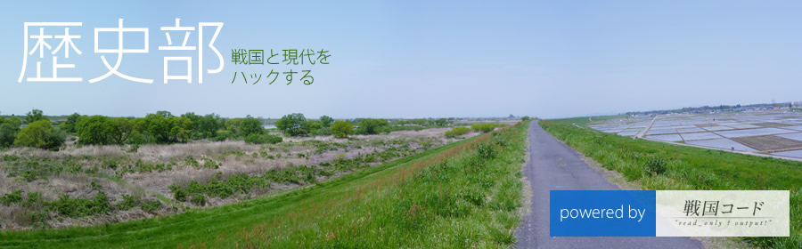

歴史部は、戦国と現代をハックする人々の集まりです。
戦国時代を学ぶ人が集まる会です。「戦国コード」が主催しています。
”コード”には主に2つの意味があります。
特に戦国時代に関する前提知識などは想定していません。戦国時代に興味のある方はご参加ください。
2週間〜1ヶ月に一度ぐらいの間隔で開催する予定です。詳しいことが決まりましたら、アップしていきます。本などの情報だけではなく、現地に行って学ぶことも多いので、四半期に1度ぐらいはどこかに現地訪問することを考えています。
下北沢オープンソースCafeには、他にもいろんなプロジェクトがあります。覗いてみて下さいね :-)